Alcuni dei progetti che ho contribuito a far crescere, costruendo strategie, testando opportunità e trasformando i dati in decisioni.
Arduino Sensor Kit: come una query di ricerca interna è diventata un prodotto co-progettato con un competitor cinese.
Gestivo il performance marketing dell'e-commerce Arduino a livello globale. Analizzando i dati di ricerca interni allo store, abbiamo individuato un pattern ricorrente: migliaia di utenti cercavano "sensor kit for arduino uno", un prodotto che non esisteva nel nostro catalogo.
Trasformare un segnale di domanda latente in un prodotto reale, in un mercato dominato da competitor cinesi che offrivano kit simili non ufficiali a prezzi aggressivi.
Abbiamo documentato il gap di mercato con dati quantitativi e presentato il business case. Il progetto si è evoluto in una co-produzione strategica con Seeed Studio, che è diventato partner ufficiale. Ho seguito il prodotto dal concept al lancio globale.
Prodotto lanciato globalmente, partnership strategica con un ex competitor che ha aperto l'accesso al mercato cinese. Il primo prodotto Arduino con un'interfaccia web dedicata con tutorial e progetti eseguibili.
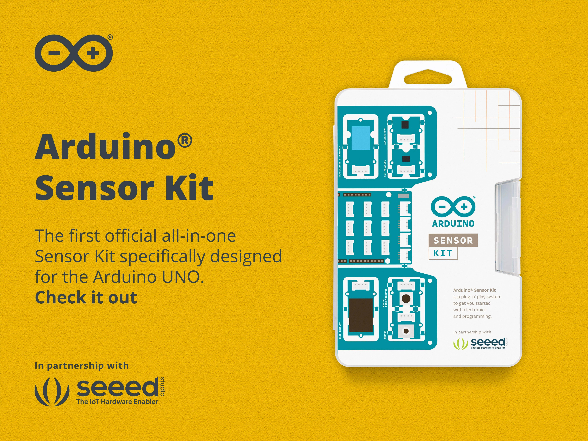
Meta ad · claim split test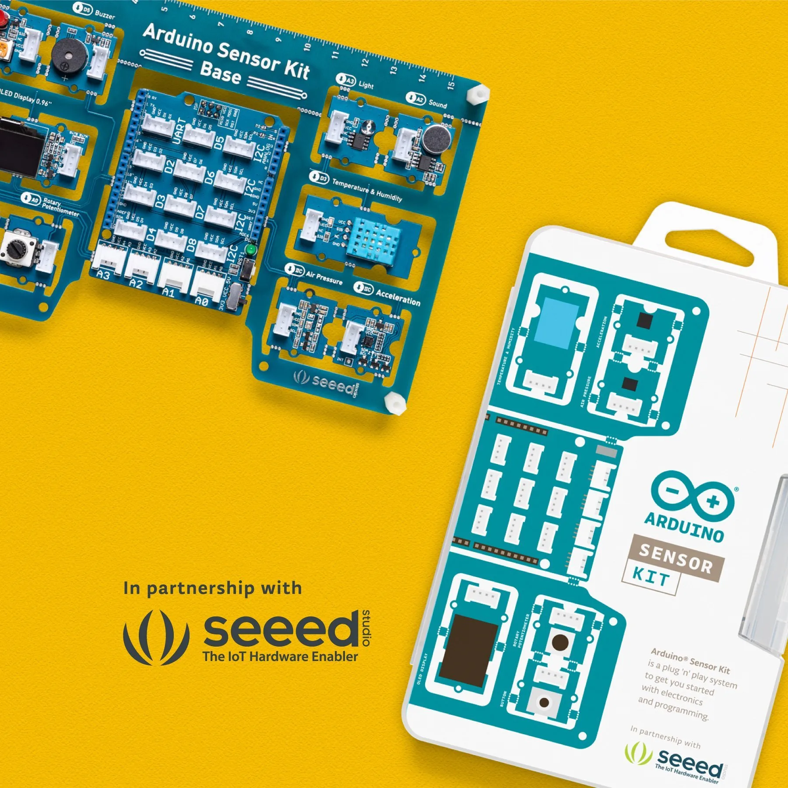
Instagram post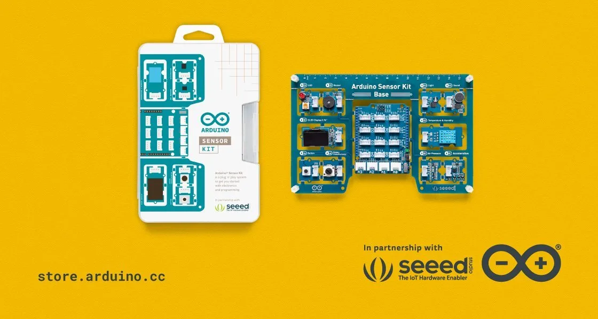
Blog heroArduino Student Kit, IoT Kit & Arduino Cloud: Landing page come strumento di validazione di prodotto e messaggi.
Arduino aveva bisogno di validare la domanda di mercato per nuovi prodotti (Student Kit, IoT Kit, Arduino Cloud) e di testare messaggi e features prima di investire in scala.
Misurare l'interesse reale del mercato con budget minimi, ottenendo dati statisticamente significativi per guidare le decisioni di prodotto e comunicazione.
Ho progettato e lanciato landing page dedicate per ogni prodotto e variante di messaggio, guidando il traffico con campagne paid mirate a basso budget e confrontando conversion rate e qualità del traffico per sorgente.
Le landing page hanno generato un conversion rate superiore di 3x rispetto alla media dell'e-commerce. I dati raccolti hanno guidato le decisioni su quali prodotti produrre e quali messaggi usare.
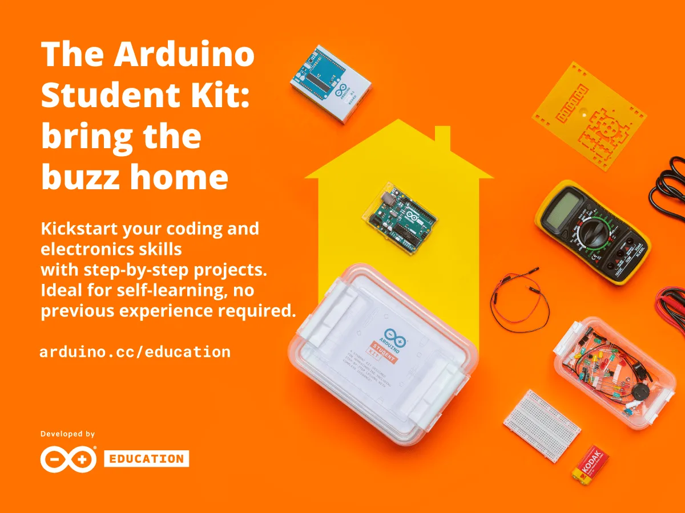
Facebook · Student Kit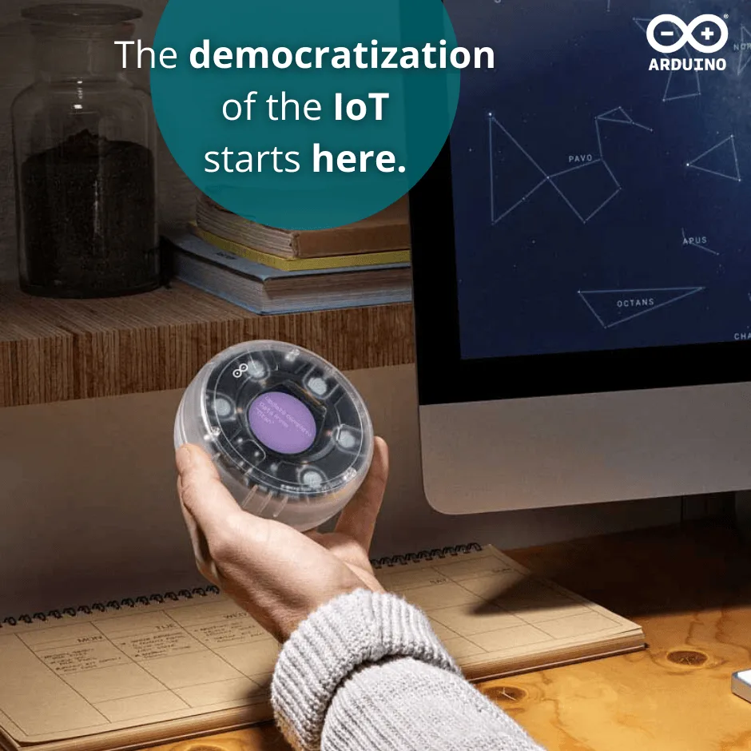
Landing · IoT Kit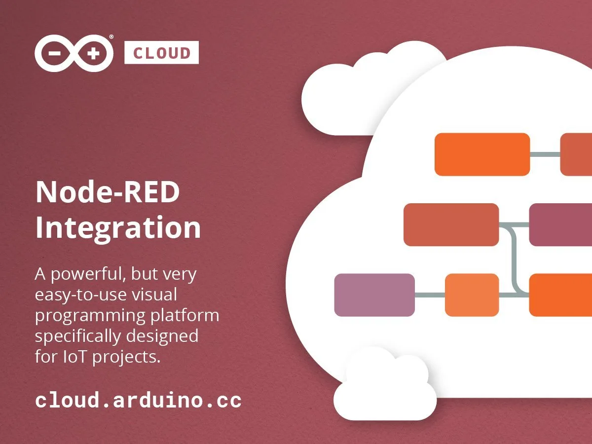
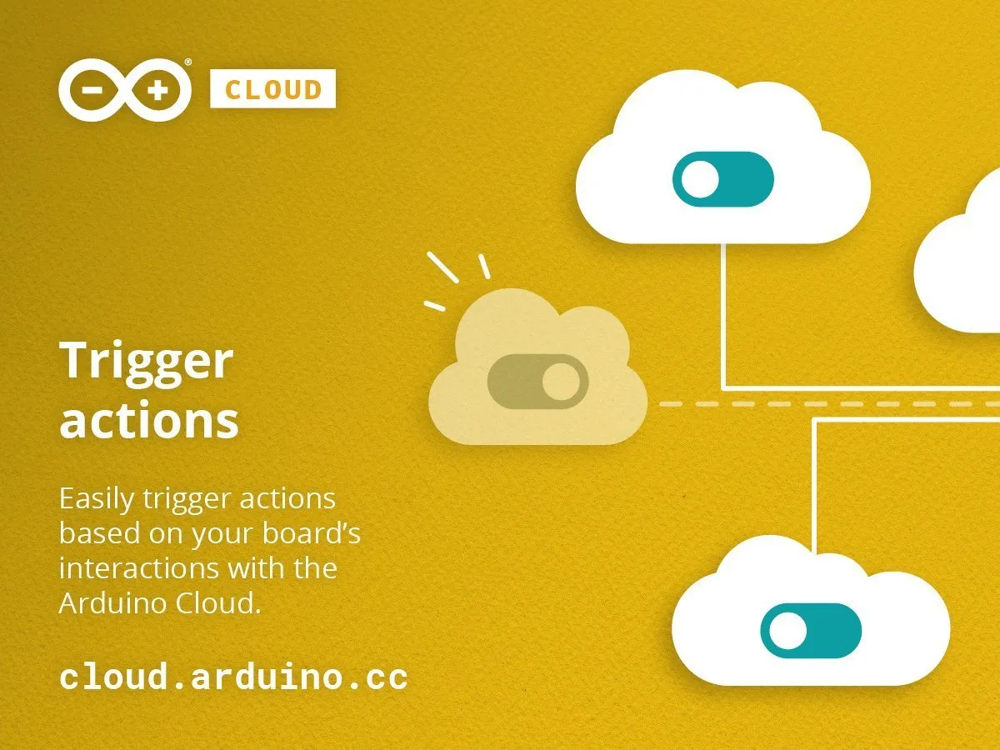
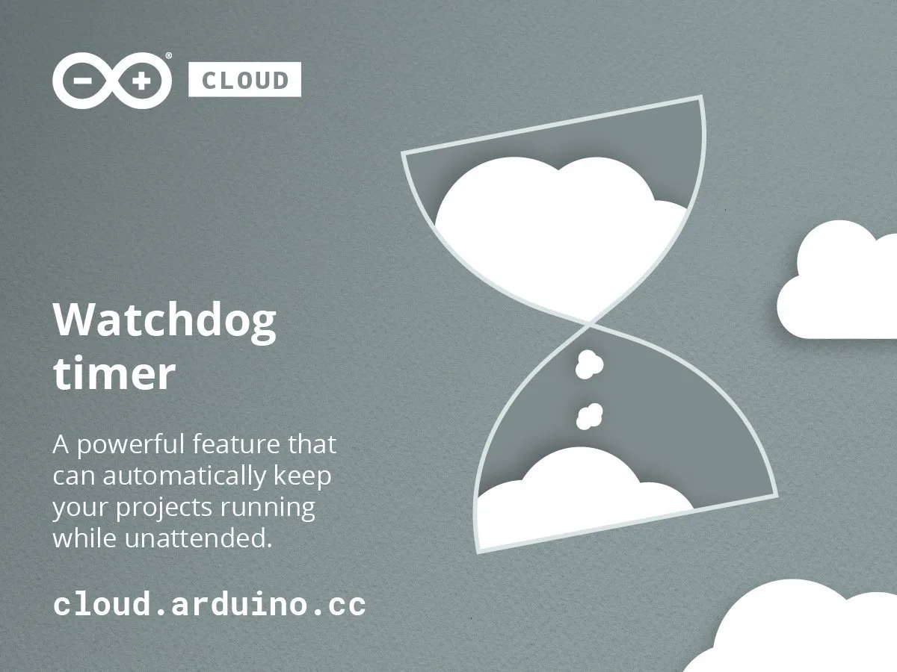
Black Friday, Natale e campagne stagionali: performance marketing su scala globale.
Le campagne stagionali (Black Friday, Natale) rappresentavano i momenti di massima opportunità per l'ecommerce Arduino, con finestre temporali strette e pressione sui risultati immediati.
Massimizzare il ritorno sulla spesa pubblicitaria in finestre di 7-14 giorni, su audience globali e su più piattaforme contemporaneamente, con asset creativi diversificati per segmento (maker, famiglie, studenti).
Campagne multi-segmento con asset creativi specifici per ogni audience, budget allocation in tempo reale basata sulle performance per canale, tracking end-to-end con eventi GA custom.
ROAS superiore al 5x nelle campagne stagionali principali. Black Friday e Natale sono diventati un playbook replicabile anno dopo anno.
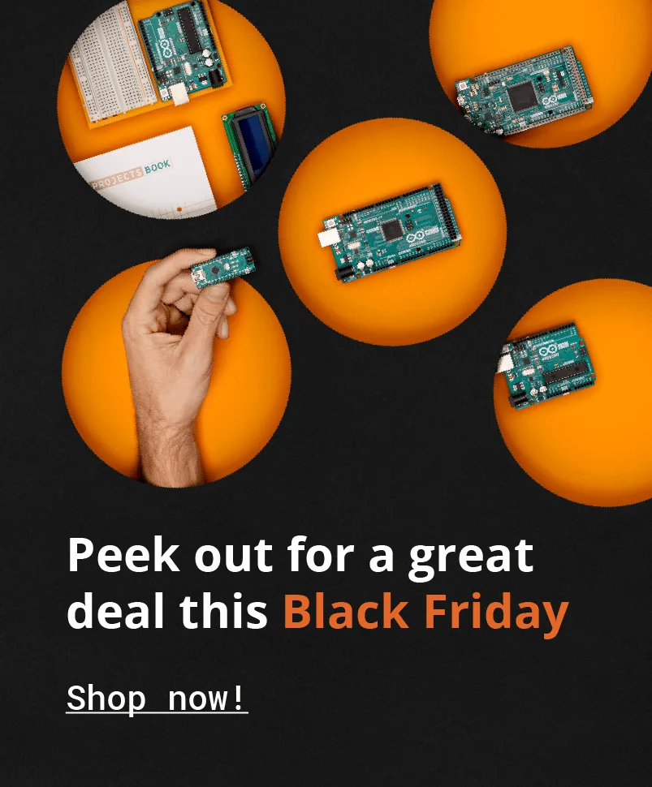
BF homepage takeover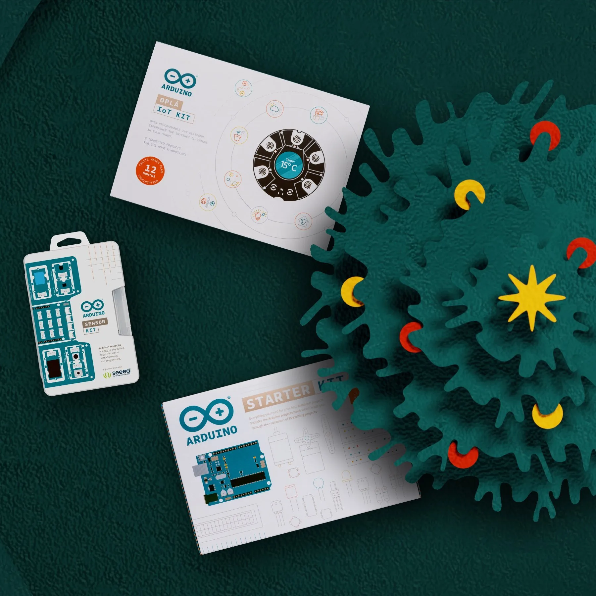
Instagram · Xmas Maker Family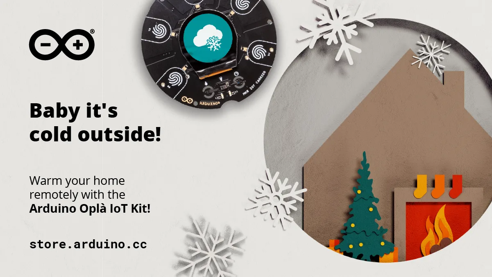
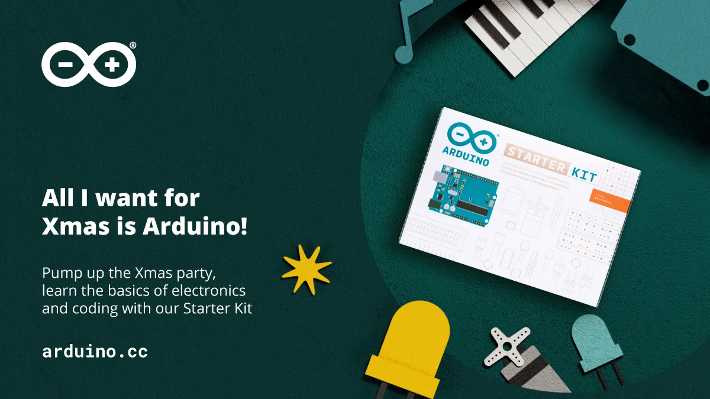
Data Layer ecommerce Arduino: il sistema di misurazione dietro ogni decisione.
Quando sono arrivato, l'ecommerce Arduino non aveva un data layer strutturato. Gli eventi di tracking erano parziali o inesistenti, rendendo impossibile attribuire revenue alle campagne e ottimizzare il funnel di acquisto.
Progettare e implementare un'infrastruttura di misurazione completa per un e-commerce globale, in modo da comprendere il comportamento del traffico e consentire campagne di remarketing.
Ho progettato, insieme al team di sviluppo, un data layer e-commerce completo. Tracking via GTM con naming convention strutturate, collegando GA, pixel pubblicitari e dashboard di reporting.
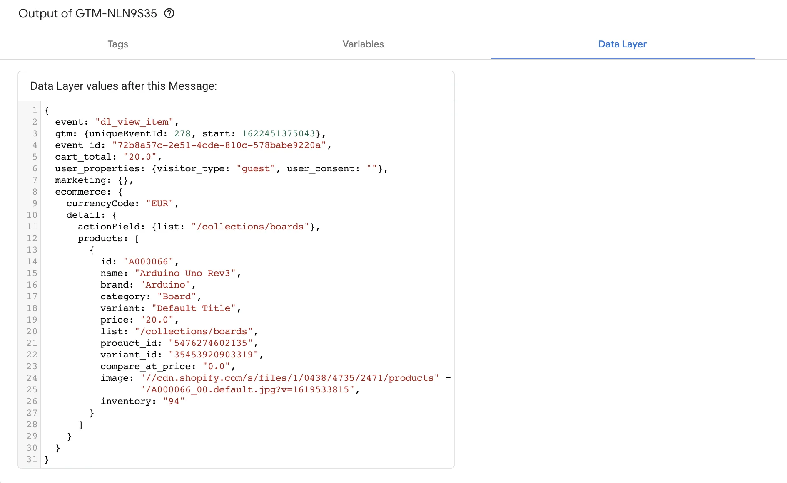
GTM data layer output20 minuti gratuiti per capire dove sei, dove vuoi arrivare e se posso aiutarti. Nessun impegno.
Prenota la call gratuita · 20 min